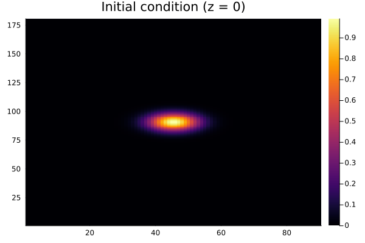
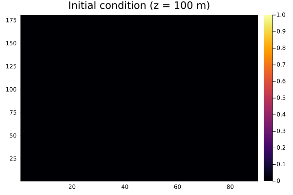
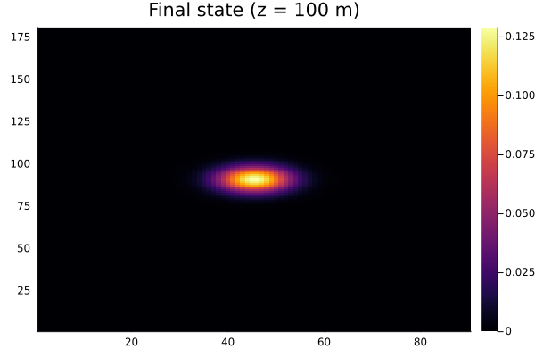

Spherical Diffusion with ClimaCore
This tutorial solves 3D diffusion on a spherical shell using ClimaCore.jl for the spatial discretization and ClimaTimeSteppers for the time integration. It demonstrates the same IMEX pattern used in ClimaAtmos.jl, but applied to a spectral-element mesh instead of simple arrays.
- Horizontal diffusion is treated explicitly (spectral element operators)
- Vertical diffusion is treated implicitly (finite differences with a tridiagonal Jacobian)
- DSS ensures continuity across spectral element boundaries
A Gaussian perturbation is placed on the lowest vertical face and diffuses both horizontally and vertically over 500 seconds.
This tutorial requires ClimaCore.jl and is more expensive to build than the IMEX tutorial. Read that one first for the core ClimaTimeSteppers API.
Spatial setup
import LinearAlgebra
import ClimaTimeSteppers
import ClimaCore
import Plots
import ClimaCore.MatrixFields: @name, ⋅, FieldMatrixWithSolver
const meters = meter = 1.0
const kilometers = kilometer = 1000meters
const seconds = second = 1.0We build a 3D spherical shell grid by extruding a horizontal spectral element mesh with a vertical finite difference mesh:
radius = 6000kilometers
height = 1kilometers
number_horizontal_elements = 10
horizontal_polynomial_order = 3
number_vertical_elements = 10
# Vertical grid (face-centered finite differences)
vertdomain = ClimaCore.Domains.IntervalDomain(
ClimaCore.Geometry.ZPoint(0kilometers),
ClimaCore.Geometry.ZPoint(height);
boundary_names = (:bottom, :top),
)
vertmesh = ClimaCore.Meshes.IntervalMesh(vertdomain; nelems = number_vertical_elements)
vertspace = ClimaCore.Spaces.FaceFiniteDifferenceSpace(vertmesh)
# Horizontal grid (cubed-sphere spectral elements with GLL quadrature)
horzdomain = ClimaCore.Domains.SphereDomain(radius)
horzmesh = ClimaCore.Meshes.EquiangularCubedSphere(horzdomain, number_horizontal_elements)
horztopology = ClimaCore.Topologies.Topology2D(ClimaCore.ClimaComms.context(), horzmesh)
horzquad = ClimaCore.Spaces.Quadratures.GLL{horizontal_polynomial_order + 1}()
horzspace = ClimaCore.Spaces.SpectralElementSpace2D(horztopology, horzquad)
# 3D extruded space
space = ClimaCore.Spaces.ExtrudedFiniteDifferenceSpace(horzspace, vertspace)Initial condition
A Gaussian perturbation placed only on the lowest vertical face:
σ = 15.0
(; lat, long, z) = ClimaCore.Fields.coordinate_field(space)
φ_gauss = @. exp(-(lat^2 + long^2) / σ^2) * (z < 0.005)
# Pack into a FieldVector (ClimaCore's state container)
Y₀ = ClimaCore.Fields.FieldVector(; my_var = copy(φ_gauss))Tendency functions
The diffusion equation $\partial_t u = K \nabla^2 u$ is split into horizontal (explicit) and vertical (implicit) parts.
Explicit tendency (horizontal diffusion)
We use the weak divergence for the spectral element discretization — the output of a derivative operator is not continuously differentiable, so the weak form is needed for even-order derivatives:
diverg = ClimaCore.Operators.WeakDivergence()
grad = ClimaCore.Operators.Gradient()
K = 3.0
function T_exp!(∂ₜY, Y, _, _)
∂ₜY.my_var .= K .* diverg.(grad.(Y.my_var))
return nothing
endImplicit tendency (vertical diffusion)
Vertical operators use face-to-center (F2C) and center-to-face (C2F) staggering. Boundary conditions (zero divergence at top and bottom) are set on the C2F operator:
diverg_vert = ClimaCore.Operators.DivergenceC2F(;
bottom = ClimaCore.Operators.SetDivergence(0.0),
top = ClimaCore.Operators.SetDivergence(0.0),
)
grad_vert = ClimaCore.Operators.GradientF2C()
function T_imp!(∂ₜY, Y, _, _)
∂ₜY.my_var .= K .* diverg_vert.(grad_vert.(Y.my_var))
return nothing
endJacobian (Wfact)
The Jacobian prototype is a FieldMatrix — ClimaCore's sparse matrix type that stores per-column tridiagonal blocks. Wfact computes $W = \Delta t\, \gamma\, J - I$:
jacobian_matrix = ClimaCore.MatrixFields.FieldMatrix(
(@name(my_var), @name(my_var)) =>
similar(φ_gauss, ClimaCore.MatrixFields.TridiagonalMatrixRow{Float64}),
)
div_matrix = ClimaCore.MatrixFields.operator_matrix(diverg_vert)
grad_matrix = ClimaCore.MatrixFields.operator_matrix(grad_vert)
function Wfact(W, Y, p, dtγ, t)
@. W.matrix[@name(my_var), @name(my_var)] =
dtγ * div_matrix() ⋅ grad_matrix() - (LinearAlgebra.I,)
return nothing
end
T_imp_wrapped = ClimaTimeSteppers.ODEFunction(
T_imp!;
jac_prototype = FieldMatrixWithSolver(jacobian_matrix, Y₀),
Wfact = Wfact,
)DSS (direct stiffness summation)
On spectral element meshes, DSS enforces continuity across element boundaries. In ClimaAtmos this is done inside the dss! callback:
function dss!(state, p, t)
ClimaCore.Spaces.weighted_dss!(state.my_var)
endBuilding and solving the problem
t0 = 0seconds
t_end = 500seconds
dt = 5seconds
prob = ClimaTimeSteppers.ODEProblem(
ClimaTimeSteppers.ClimaODEFunction(; T_imp! = T_imp_wrapped, T_exp!, dss!),
Y₀,
(t0, t_end),
nothing,
)
algo = ClimaTimeSteppers.RosenbrockAlgorithm(
ClimaTimeSteppers.tableau(ClimaTimeSteppers.SSPKnoth()),
)
integrator = ClimaTimeSteppers.init(prob, algo; dt, saveat = t0:dt:t_end)Visualization
We remap ClimaCore fields onto a regular lat-lon grid for plotting:
function remap(; target_z = 0.0, integrator = integrator)
longpts = range(-180.0, 180.0, 180)
latpts = range(-90.0, 90.0, 90)
hcoords = [ClimaCore.Geometry.LatLongPoint(lat, long) for long in longpts, lat in latpts]
zcoords = [ClimaCore.Geometry.ZPoint(target_z)]
field = integrator.u.my_var
remapper = ClimaCore.Remapping.Remapper(axes(field), hcoords, zcoords)
return ClimaCore.Remapping.interpolate(remapper, field)[:, :, begin]
endInitial state at the surface (z = 0)
Plots.heatmap(remap(); title = "Initial condition (z = 0)")
Plots.savefig("diff_initial_surface.png")
Initial state at z = 100 m (should be empty)
Plots.heatmap(remap(; target_z = 0.1kilometers); title = "Initial condition (z = 100 m)")
Plots.savefig("diff_initial_100m.png")
Solve and inspect the final state
ClimaTimeSteppers.solve!(integrator)
println("Initial extrema: ", extrema(Y₀))
println("Final extrema: ", extrema(integrator.u))Initial extrema: (-6.7618769531562785e-25, 0.999999997550737)
Final extrema: (-6.7618769531562785e-25, 0.999999997550737)After 500 seconds of diffusion, the peak value has decreased and the perturbation has spread both horizontally and vertically:
Plots.heatmap(remap(; target_z = 0.1kilometers); title = "Final state (z = 100 m)")
Plots.savefig("diff_final_100m.png")
The layer at z = 100 m, which started empty, now shows the diffused signal.